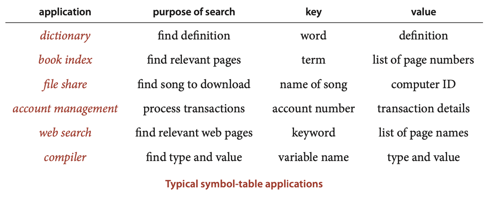

<!DOCTYPE html>
<html lang="en">
  <head>
    <meta charset="utf-8" />
    <meta name="viewport" content="width=device-width, initial-scale=1.0, maximum-scale=1.0, user-scalable=no" />

    <title></title>
    <link rel="stylesheet" href="dist/reveal.css" />
    <link rel="stylesheet" href="dist/theme/iph.css" id="theme" />
    <link rel="stylesheet" href="plugin/highlight/spyder.css" />
	<link rel="stylesheet" href="css/layout.css" />
	<link rel="stylesheet" href="plugin/customcontrols/style.css">


    <script defer src="dist/fontawesome/all.min.js"></script>

	<script type="text/javascript">
		var forgetPop = true;
		function onPopState(event) {
			if(forgetPop){
				forgetPop = false;
			} else {
				parent.postMessage(event.target.location.href, "app://obsidian.md");
			}
        }
		window.onpopstate = onPopState;
		window.onmessage = event => {
			if(event.data == "reload"){
				window.document.location.reload();
			}
			forgetPop = true;
		}

		function fitElements(){
			const itemsToFit = document.getElementsByClassName('fitText');
			for (const item in itemsToFit) {
				if (Object.hasOwnProperty.call(itemsToFit, item)) {
					var element = itemsToFit[item];
					fitElement(element,1, 1000);
					element.classList.remove('fitText');
				}
			}
		}

		function fitElement(element, start, end){

			let size = (end + start) / 2;
			element.style.fontSize = `${size}px`;

			if(Math.abs(start - end) < 1){
				while(element.scrollHeight > element.offsetHeight){
					size--;
					element.style.fontSize = `${size}px`;
				}
				return;
			}

			if(element.scrollHeight > element.offsetHeight){
				fitElement(element, start, size);
			} else {
				fitElement(element, size, end);
			}		
		}


		document.onreadystatechange = () => {
			fitElements();
			if (document.readyState === 'complete') {
				if (window.location.href.indexOf("?export") != -1){
					parent.postMessage(event.target.location.href, "app://obsidian.md");
				}
				if (window.location.href.indexOf("print-pdf") != -1){
					let stateCheck = setInterval(() => {
						clearInterval(stateCheck);
						window.print();
					}, 250);
				}
			}
	};


        </script>
  </head>
  <body>
    <div class="reveal">
      <div class="slides"><section  data-markdown><script type="text/template"><!-- .slide: class="has-light-background drop" data-background-color="#f8f8f8" -->
<div class="" style="position: absolute; left: 0px; top: 0px; height: 700px; width: 960px; min-height: 700px; display: flex; flex-direction: column; align-items: center; justify-content: center" absolute="true">

### Estructura de Datos y Algoritmos - EDA

####  *Tabla de símbolos (mapa)*

[Eduardo Rosales](mailto:ee.rosales24@uniandes.edu.co)

Departamento de Ingeniería de Sistemas y Computación

Universidad de los Andes
</div></script></section><section  data-markdown><script type="text/template"><!-- .slide: class="has-light-background drop" data-background-color="#f8f8f8" -->
<div class="" style="position: absolute; left: 0px; top: 0px; height: 700px; width: 960px; min-height: 700px; display: flex; flex-direction: column; align-items: center; justify-content: center" absolute="true">

### Motivación

- ¿Por qué necesitamos parejas llave-valor?
</div></script></section><section  data-markdown><script type="text/template"><!-- .slide: class="has-light-background drop" data-background-color="#f8f8f8" -->
<div class="" style="position: absolute; left: 0px; top: 0px; height: 700px; width: 960px; min-height: 700px; display: flex; flex-direction: column; align-items: center; justify-content: center" absolute="true">

### Parejas `llave-valor`​ (1/4)
    
- Mecanismo abstracto que permite 
	- Asociar y almacenar​ llaves y valores
- *Llave*: 
	- Elemento único que permite 
		- Recuperar y modificar un valor
- *Valor*: 
	- Información relacionada a la llave
</div></script></section><section  data-markdown><script type="text/template"><!-- .slide: class="has-light-background drop" data-background-color="#f8f8f8" -->
<div class="" style="position: absolute; left: 0px; top: 0px; height: 700px; width: 960px; min-height: 700px; display: flex; flex-direction: column; align-items: center; justify-content: center" absolute="true">

### Parejas `llave-valor` (2/4)


</div></script></section><section  data-markdown><script type="text/template"><!-- .slide: class="has-light-background drop" data-background-color="#f8f8f8" -->
<div class="" style="position: absolute; left: 0px; top: 0px; height: 700px; width: 960px; min-height: 700px; display: flex; flex-direction: column; align-items: center; justify-content: center" absolute="true">

### Parejas `llave-valor`​ (3/4)

- Organización​
	- Búsqueda rápida vía una llave única​
- Acceso directo​
	- Acceso inmediato a un valor​
- Flexibilidad​
	- Representa relaciones complejas entre datos​
- Escalabilidad ​
	- Maneja eficientemente muchos datos
</div></script></section><section  data-markdown><script type="text/template"><!-- .slide: class="has-light-background drop" data-background-color="#f8f8f8" -->
<div class="" style="position: absolute; left: 0px; top: 0px; height: 700px; width: 960px; min-height: 700px; display: flex; flex-direction: column; align-items: center; justify-content: center" absolute="true">

### Parejas `llave-valor`​ (4/4)

- Las parejas llave-valor permiten asociar datos de manera intuitiva y eficiente

- Facilitando búsquedas por llave

- Aunque algunas estructuras lineales permiten accesos **O(1)** (Ej: Arreglos)

	- No son ideales para manipular parejas llave-valor

- Se necesitan estructuras especializadas en

	- Búsquedas rápidas y operaciones que asocien parejas llave-valor

	- Que idealmente manipulen estas parejas 
		- En complejidad temporal **O(1)** promedio
</div></script></section><section  data-markdown><script type="text/template"><!-- .slide: class="has-light-background drop" data-background-color="#f8f8f8" -->
<div class="" style="position: absolute; left: 0px; top: 0px; height: 700px; width: 960px; min-height: 700px; display: flex; flex-direction: column; align-items: center; justify-content: center" absolute="true">

### Tabla de símbolos​ (1/3)
    
- También llamadas:​
	- Diccionarios​
	- Arreglos asociativos​
	- Mapas​
    

- Mecanismo abstracto que permite asociar y almacenar llaves y valores​
    
- Es común administrar grandes cantidades de información y numerosas llaves​
    
- Una tabla de símbolos debe ser muy eficiente
</div></script></section><section  data-markdown><script type="text/template"><!-- .slide: class="has-light-background drop" data-background-color="#f8f8f8" -->
<div class="" style="position: absolute; left: 0px; top: 0px; height: 700px; width: 960px; min-height: 700px; display: flex; flex-direction: column; align-items: center; justify-content: center" absolute="true">

### Tabla de símbolos​ (2/3)


- Las llaves deben ser únicas
- Los valores pueden estar repetidos
- Contrario a un arreglo
	- Las llaves (índices) no necesariamente 
		- Deben ser consecutivas o siquiera numéricas
</div></script></section><section  data-markdown><script type="text/template"><!-- .slide: class="has-light-background drop" data-background-color="#f8f8f8" -->
<div class="" style="position: absolute; left: 0px; top: 0px; height: 700px; width: 960px; min-height: 700px; display: flex; flex-direction: column; align-items: center; justify-content: center" absolute="true">

### Tabla de símbolos​ (3/3)


- Las llaves deben ser **comparables** e **inmutables**

- Los valores (idealmente) no deberían ser nulos
</div></script></section><section  data-markdown><script type="text/template"><!-- .slide: class="has-light-background drop" data-background-color="#f8f8f8" -->
<div class="" style="position: absolute; left: 0px; top: 0px; height: 700px; width: 960px; min-height: 700px; display: flex; flex-direction: column; align-items: center; justify-content: center" absolute="true">

### Tabla de símbolos​ - Ejemplos


</div></script></section><section  data-markdown><script type="text/template"><!-- .slide: class="has-light-background drop" data-background-color="#f8f8f8" -->
<div class="" style="position: absolute; left: 0px; top: 0px; height: 700px; width: 960px; min-height: 700px; display: flex; flex-direction: column; align-items: center; justify-content: center" absolute="true">

### Tablas de símbolos y orden

- Pueden mantener un orden
	- Dadas las relaciones entre las llaves a guardar

- **Ordered map**:
- Ej:
	- Llaves numéricas ordenadas de menor a mayor
 - **Unordered map**:
- Ej:
	- Llaves tipo string con nombres no ordenados de colores
</div></script></section><section  data-markdown><script type="text/template"><!-- .slide: class="has-light-background drop" data-background-color="#f8f8f8" -->
<div class="" style="position: absolute; left: 0px; top: 0px; height: 700px; width: 960px; min-height: 700px; display: flex; flex-direction: column; align-items: center; justify-content: center" absolute="true">

### TAD - Tabla de símbolos (Diccionario, Mapa) - API


<html lang="es">
<head>
    <meta charset="UTF-8">
    <meta name="viewport" content="width=device-width, initial-scale=1.0">
    <title>Tabla de Operaciones de Map</title>
    <style>
        table {
            width: 100%;
            border-collapse: collapse;
            font-family: Arial, sans-serif;
        }
        th, td {
            border: 1px solid black;
            padding: 10px;
            text-align: left;
        }
        th {
            background-color: #d4e1f5; /* Azul claro */
            font-weight: bold;
        }
        td:first-child {
            background-color: #ebebeb; /* Gris claro */
            font-weight: bold;
        }
    </style>
</head>
<body>

<table>
    <tr>
        <th>Operación</th>
        <th>Descripción</th>
    </tr>
    <tr>
        <td><code>new_map</code></td>
        <td>Crea un nuevo mapa vacío</td>
    </tr>
    <tr>
        <td><code>put(key, value)</code></td>
        <td>Agrega una pareja &lt;key,value&gt; al mapa. Si key ya existe en el mapa, el valor se reemplaza con el nuevo</td>
    </tr>
    <tr>
        <td><code>get(key)</code></td>
        <td>Dada una llave, se retorna el valor asociado a dicha llave</td>
    </tr>
    <tr>
        <td><code>remove(key)</code></td>
        <td>Se elimina la pareja &lt;key,value&gt;, para una llave determinada</td>
    </tr>
    <tr>
        <td><code>contains(key)</code></td>
        <td>Informa si una llave se encuentra o no en el mapa</td>
    </tr>
    <tr>
        <td><code>size()</code></td>
        <td>Informa el número de llaves dentro de un mapa</td>
    </tr>
    <tr>
        <td><code>is_empty()</code></td>
        <td>Informa si un mapa es vacío</td>
    </tr>
    <tr>
        <td><code>key_set()</code></td>
        <td>Retorna una lista con todas las llaves de un mapa</td>
    </tr>
    <tr>
        <td><code>value_set()</code></td>
        <td>Retorna una lista con todos los valores de un mapa</td>
    </tr>
</table>

</body>
</html>
</div></script></section><section  data-markdown><script type="text/template"><!-- .slide: class="has-light-background drop" data-background-color="#f8f8f8" -->
<div class="" style="position: absolute; left: 0px; top: 0px; height: 700px; width: 960px; min-height: 700px; display: flex; flex-direction: column; align-items: center; justify-content: center" absolute="true">

### TAD - Tabla de símbolos (Diccionario, Mapa)


</div></script></section><section  data-markdown><script type="text/template"><!-- .slide: class="has-light-background drop" data-background-color="#f8f8f8" -->
<div class="" style="position: absolute; left: 0px; top: 0px; height: 700px; width: 960px; min-height: 700px; display: flex; flex-direction: column; align-items: center; justify-content: center" absolute="true">

### Parejas `llave-valor` en Python
</div></script></section><section  data-markdown><script type="text/template"><!-- .slide: class="has-light-background drop" data-background-color="#f8f8f8" -->
<div class="" style="position: absolute; left: 0px; top: 0px; height: 700px; width: 960px; min-height: 700px; display: flex; flex-direction: column; align-items: center; justify-content: center" absolute="true">

### Diccionario

- Colección mutable 
- Mapea llaves únicas a valores


</div></script></section><section  data-markdown><script type="text/template"><!-- .slide: class="has-light-background drop" data-background-color="#f8f8f8" -->
<div class="" style="position: absolute; left: 0px; top: 0px; height: 700px; width: 960px; min-height: 700px; display: flex; flex-direction: column; align-items: center; justify-content: center" absolute="true">

### `dict`

- Tipo de dato
	- Representa a un diccionario en Python
- Del tipo `dict` puede haber:
	- Variables
	- Parámetros
	- Y tipos de retorno
</div></script></section><section  data-markdown><script type="text/template"><!-- .slide: class="has-light-background drop" data-background-color="#f8f8f8" -->
<div class="" style="position: absolute; left: 0px; top: 0px; height: 700px; width: 960px; min-height: 700px; display: flex; flex-direction: column; align-items: center; justify-content: center" absolute="true">

### Llave

- Elemento único que permite 
	- Recuperar y modificar un valor
- Debe ser de tipos de datos **inmutables**:
	- `int`
	- `float`
	- `str`
	- `bool`
</div></script></section><section  data-markdown><script type="text/template"><!-- .slide: class="has-light-background drop" data-background-color="#f8f8f8" -->
<div class="" style="position: absolute; left: 0px; top: 0px; height: 700px; width: 960px; min-height: 700px; display: flex; flex-direction: column; align-items: center; justify-content: center" absolute="true">

### Valor

- Información relacionada a la llave
- Pueden ser de cualquier tipo:
	- `int`
	- `float`
	- `str`
	- `bool`
	- **`dict`**
		- Es decir, un diccionario 
			- Puede contener a otro diccionario
</div></script></section><section  data-markdown><script type="text/template"><!-- .slide: class="has-light-background drop" data-background-color="#f8f8f8" -->
<div class="" style="position: absolute; left: 0px; top: 0px; height: 700px; width: 960px; min-height: 700px; display: flex; flex-direction: column; align-items: center; justify-content: center" absolute="true">

### `dict` - Operaciones y métodos principales (1/4)

- **`k in M`**: Retorna `True` si el mapa contiene un elemento con la llave `k`
  
- **`M.get(k, d=None)`**:  
  - Retorna `M[k]` si la llavee `k` existe en el mapa  
  - Si no existe, retorna el valor por defecto `d` (si alguno)  
  - Evita errores del tipo `KeyError`

- **`M.setdefault(k, d)`**:  
  - Si la clave `k` existe en el mapa, retorna `M[k]`
  - Si no existe, asigna `M[k] = d` y retorna ese valor

- **`M.pop(k, d=None)`**:  
  - Elimina el elemento con la llave `k` del mapa y retorna su valor
  - Si `k` no existe, retorna `d`  
  - Si `d` no se proporciona y `k` no está en el mapa
	  - Lanza un `KeyError`
</div></script></section><section  data-markdown><script type="text/template"><!-- .slide: class="has-light-background drop" data-background-color="#f8f8f8" -->
<div class="" style="position: absolute; left: 0px; top: 0px; height: 700px; width: 960px; min-height: 700px; display: flex; flex-direction: column; align-items: center; justify-content: center" absolute="true">

### `dict` - Operaciones y métodos principales (2/4)

- **`M.popitem()`**:  
  - Elimina un par llave-valor arbitrario del mapa y
	  - Retorna una tupla `(llave, valor)` con el par eliminado 
  - **Nota**:  En Python 3.7 y versiones posteriores
	  - Elimina y retorna **el último par llave-valor insertado**
  - Si el mapa está vacío, lanza un `KeyError`

- **`M.clear()`**:  
  - Elimina todas las llaves y valores del mapa  

- **`M.keys()`**:  
  - Retorna una vista tipo conjunto con todas las llaves del mapa  

- **`M.values()`**:  
  - Retorna una vista tipo conjunto con todos los valores del mapa  

- **`M.items()`**:  
  - Retorna una vista tipo conjunto con todas las tuplas `(llave, valor)`
</div></script></section><section  data-markdown><script type="text/template"><!-- .slide: class="has-light-background drop" data-background-color="#f8f8f8" -->
<div class="" style="position: absolute; left: 0px; top: 0px; height: 700px; width: 960px; min-height: 700px; display: flex; flex-direction: column; align-items: center; justify-content: center" absolute="true">

### `dict` - Operaciones y métodos principales (3/4)

- **`M.update(M2)`**:  
  - Asigna `M[llave] = valor` 
	  - Para cada par `(llave, valor)` en el mapa `M2`  

- **`M == M2`**:  
  - Retorna `True` si los mapas `M` y `M2` tienen asociaciones de llave-valor idénticas  

- **`M != M2`**:  
  - Retorna `True` si los mapas `M` y `M2` no tienen asociaciones de llave-valor idénticas
</div></script></section><section  data-markdown><script type="text/template"><!-- .slide: class="has-light-background drop" data-background-color="#f8f8f8" -->
<div class="" style="position: absolute; left: 0px; top: 0px; height: 700px; width: 960px; min-height: 700px; display: flex; flex-direction: column; align-items: center; justify-content: center" absolute="true">

### `dict` - Operaciones y métodos principales (4/4)


- \*`popitem()` desde Python 3.7
  - Elimina y retorna el último par llave-valor insertado
</div></script></section><section  data-markdown><script type="text/template"><!-- .slide: class="has-light-background drop" data-background-color="#f8f8f8" -->
<div class="" style="position: absolute; left: 0px; top: 0px; height: 700px; width: 960px; min-height: 700px; display: flex; flex-direction: column; align-items: center; justify-content: center" absolute="true">

### ¿Cuáles son las características principales de un diccionario en Python?
</div></script></section><section  data-markdown><script type="text/template"><!-- .slide: class="has-light-background drop" data-background-color="#f8f8f8" -->
<div class="" style="position: absolute; left: 0px; top: 0px; height: 700px; width: 960px; min-height: 700px; display: flex; flex-direction: column; align-items: center; justify-content: center" absolute="true">

### Diccionarios - Características (1/2)

- Colección mutable que mapea llaves únicas a valores
- Las llaves deben ser _hasheables_
- **Hash code**: 
	- Entero utilizado para comparaciones rápidas y recuperación en tablas de hash
- **Hasheable**: 
	- Objeto con un hash code consistente durante su vida útil

- Las llaves deben ser inmutables (Ej: `int`, `float`, `str`, `tuple`)
</div></script></section><section  data-markdown><script type="text/template"><!-- .slide: class="has-light-background drop" data-background-color="#f8f8f8" -->
<div class="" style="position: absolute; left: 0px; top: 0px; height: 700px; width: 960px; min-height: 700px; display: flex; flex-direction: column; align-items: center; justify-content: center" absolute="true">

### Diccionarios - Características (2/2)

- Paradigma alrededor de recuperar un valor por llave (no por índice)
- Soporta la consulta de longitud 
	- = Total de parejas llave-valor
- No inherentemente ordenado
	- Pero preserva el orden de inserción (Python 3.7+)
- Útil para búsquedas rápidas y organización de datos
</div></script></section><section  data-markdown><script type="text/template"><!-- .slide: class="has-light-background drop" data-background-color="#f8f8f8" -->
<div class="" style="position: absolute; left: 0px; top: 0px; height: 700px; width: 960px; min-height: 700px; display: flex; flex-direction: column; align-items: center; justify-content: center" absolute="true">

<i class="fas fa-question-circle fa-2x fa-spin fa-4x"></i>


<br>
<br>


[<i class="fas fa-home  fa-3x"></i>](https://eerosales24.github.io/eda_2025_20/#)
</div></script></section></div>
    </div>

    <script src="dist/reveal.js"></script>

    <script src="plugin/markdown/markdown.js"></script>
    <script src="plugin/highlight/highlight.js"></script>
    <script src="plugin/zoom/zoom.js"></script>
    <script src="plugin/notes/notes.js"></script>
    <script src="plugin/math/math.js"></script>
	<script src="plugin/mermaid/mermaid.js"></script>
	<script src="plugin/chart/chart.min.js"></script>
	<script src="plugin/chart/plugin.js"></script>
	<script src="plugin/customcontrols/plugin.js"></script>

    <script>
      function extend() {
        var target = {};
        for (var i = 0; i < arguments.length; i++) {
          var source = arguments[i];
          for (var key in source) {
            if (source.hasOwnProperty(key)) {
              target[key] = source[key];
            }
          }
        }
        return target;
      }

	  function isLight(color) {
		let hex = color.replace('#', '');

		// convert #fff => #ffffff
		if(hex.length == 3){
			hex = `${hex[0]}${hex[0]}${hex[1]}${hex[1]}${hex[2]}${hex[2]}`;
		}

		const c_r = parseInt(hex.substr(0, 2), 16);
		const c_g = parseInt(hex.substr(2, 2), 16);
		const c_b = parseInt(hex.substr(4, 2), 16);
		const brightness = ((c_r * 299) + (c_g * 587) + (c_b * 114)) / 1000;
		return brightness > 155;
	}

	var bgColor = getComputedStyle(document.documentElement).getPropertyValue('--r-background-color').trim();
	var isLight = isLight(bgColor);

	if(isLight){
		document.body.classList.add('has-light-background');
	} else {
		document.body.classList.add('has-dark-background');
	}

      // default options to init reveal.js
      var defaultOptions = {
        controls: true,
        progress: true,
        history: true,
        center: true,
        transition: 'default', // none/fade/slide/convex/concave/zoom
        plugins: [
          RevealMarkdown,
          RevealHighlight,
          RevealZoom,
          RevealNotes,
          RevealMath.MathJax3,
		  RevealMermaid,
		  RevealChart,
		  RevealCustomControls,
        ],


    	allottedTime: 120 * 1000,

		mathjax3: {
			mathjax: 'plugin/math/mathjax/tex-mml-chtml.js',
		},
		markdown: {
		  gfm: true,
		  mangle: true,
		  pedantic: false,
		  smartLists: false,
		  smartypants: false,
		},

		mermaid: {
			theme: isLight ? 'default' : 'dark',
		},

		customcontrols: {
			controls: [
			]
		},
      };

      // options from URL query string
      var queryOptions = Reveal().getQueryHash() || {};

      var options = extend(defaultOptions, {"width":960,"height":700,"margin":"0.025","minScale":"0.1","maxScale":"2.0","controls":"true","controlsLayout":"bottom-right","progress":"true","slideNumber":"true","center":"false","transition":"slide","transitionSpeed":"default"}, queryOptions);
    </script>

    <script>
      Reveal.initialize(options);
    </script>
  </body>

  <!-- created with Advanced Slides -->
</html>
